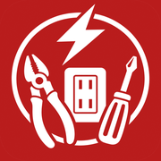

サポート
第二種電気工事士 学科試験 CBT完全攻略 — 第二種電気工事士の学科試験をCBT形式で演習できる iOS / iPadOS アプリ
お問い合わせ
ご質問、不具合の報告、機能のリクエストなどがございましたら、以下のメールアドレスまでお問い合わせください。
メール：programming.note.blog@gmail.com
お問い合わせの際は、以下の情報を添えていただけるとスムーズに対応できます。
- ご使用のデバイス（例: iPhone 16、iPad Pro 13インチ）
- iOS / iPadOS のバージョン
- アプリのバージョン
- 発生した画面、年度・期（上期／下期）、問題番号
- 問題の詳細な説明や再現手順
動作環境
- 対応 OS：iOS 17.0 以降 / iPadOS 17.0 以降
- 対応デバイス：iPhone および iPad
- インターネット接続：学習機能はオフラインで利用可能です（広告表示など一部機能は通信が必要です）
よくある質問（FAQ）
Q. アカウント登録は必要ですか？
不要です。学習履歴、間違えた問題、ブックマークなどのデータは端末内に保存されます。
Q. データはクラウドに保存されますか？
いいえ。学習履歴、間違えた問題、ブックマークなどのデータはお使いの端末上に保存されます。
Q. 端末間でデータを同期できますか？
現在、端末間の同期には対応していません。アプリを削除すると、端末内に保存された学習データも削除されます。
Q. どの試験に対応していますか？
第二種電気工事士試験の学科試験（四肢択一・50問・120分）に対応しています。技能試験には対応していません。
Q. 収録している年度を教えてください。
令和6年度上期から令和8年度下期までの全6回（各50問、計300問）を収録しています。いずれも筆記方式の学科試験として公表された問題です。CBT方式で出題された問題は公表されていないため、収録していません。
Q. 模擬試験（CBT）はどのような形式ですか？
年度・期を選ぶと、本試験と同じ50問を120分の制限時間で解答できます。試験終了後に自動で採点し、問題ごとの正誤と解説を確認できます。選択肢の記号は問題冊子と同じイ・ロ・ハ・ニです。
Q. 配線図問題はどのように出題されますか？
配線図問題（問31〜問50）は、どの問題にも配線図と共通の注意事項を付けて表示します。配線図はタップすると拡大できます。
Q. 問題の出典を教えてください。
収録している試験問題は、一般財団法人電気技術者試験センターが公表している過去問題です。出典（年度、期、試験区分、問題番号）は、問題を表示する画面に明記しています。問題冊子からの変更点は利用規約に記載しています。
Q. 解説は誰が書いていますか？
アプリ内の解説は開発者がAIを用いて作成したもので、一般財団法人電気技術者試験センターが公表したものではありません。誤りを含む可能性があります。正解は同センターが公表した解答と照合しています。
Q. 掲載内容に誤りを見つけた場合はどうすればよいですか？
年度・期、問題番号、該当箇所、正しいと思われる内容を添えてお問い合わせください。確認後、必要に応じて修正します。
Q. 公式アプリですか？
いいえ。本アプリは試験対策を支援する非公式アプリです。一般財団法人電気技術者試験センターおよび経済産業省が提供・承認する公式アプリではありません。